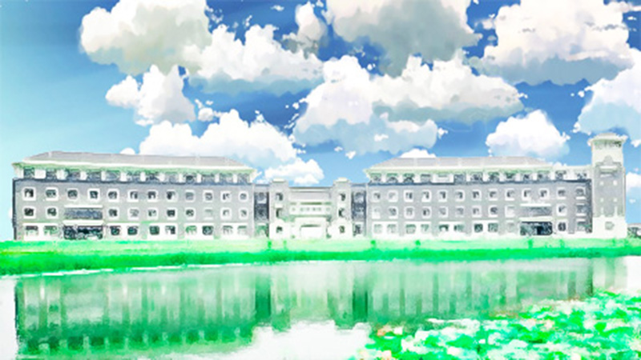
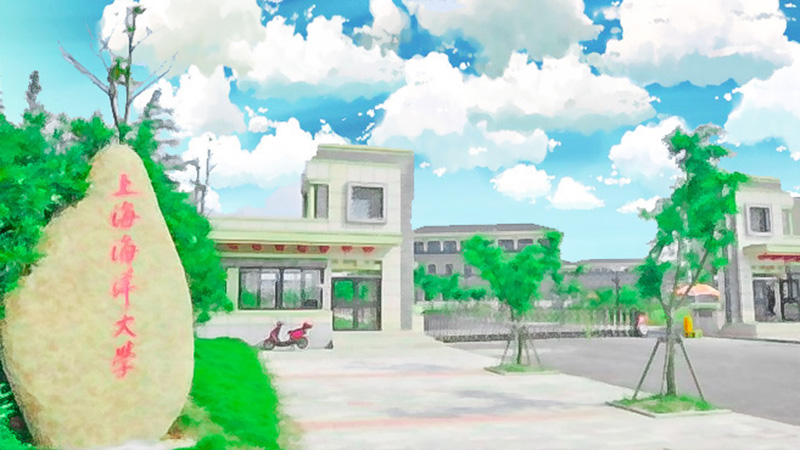
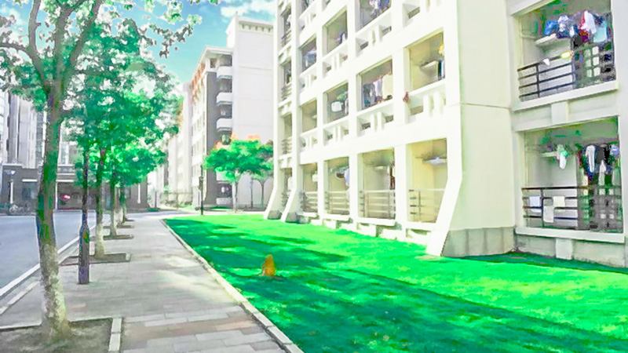
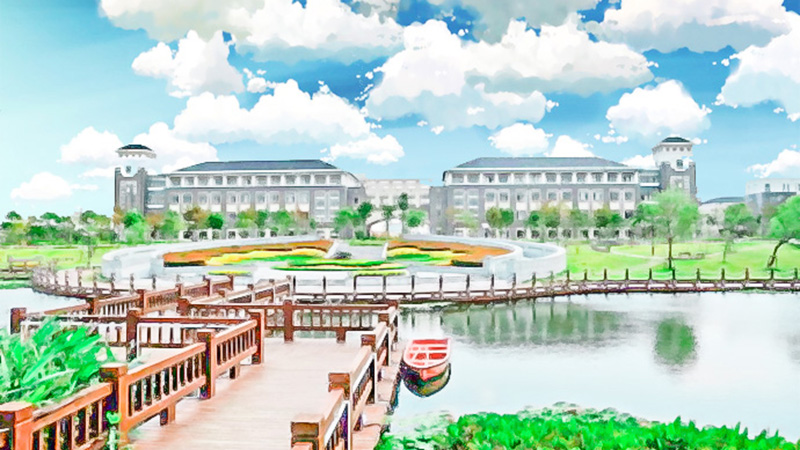
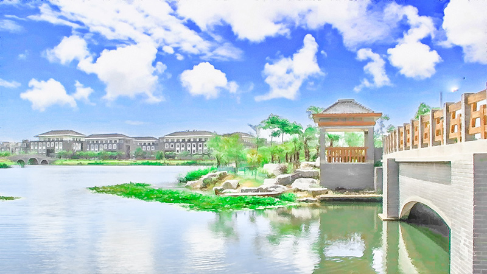

上海海洋大学 是上海市人民政府与国家海洋局、国家农业部共建的农林 类高等院校，国家首批卓越农林人才教育培养计划改革 试点高校。学校前身为始建于1912年的江苏省立水产学 校，1952年更名为上海水产学院，1985年更名为上海水 产大学，2008年更名为上海海洋大学。





- 1904年，为抵御侵渔、维护海权，著名实业家、教育家 张謇主张“渔权即海权”，向清廷倡议创办水产学校。后经 黄炎培襄助和首任校长张镠竭力筹措，于1912年正式创 办江苏省立水产学校。
- 1927年，学校更名为第四中山大学农学院水产学校。
- 1928年，学校更名为国立中央大学农学院水产学校。
- 1929年，学校恢复江苏省立水产学校校名。
- 1937年，因八一三淞沪抗战，校舍毁于战火，辗转四川 合川艰难维续水产教育。
- 1938年，先于国立第二中学成 立水产部，后于1943年成立国立四川水产职业学校。
- 1947年，学校在上海复校，定名为上海市立吴淞水产专 科学校。
- 1951年，学校更名为上海水产专科学校。
- 1952年，学校组建升格为上海水产学院。
- 1972年，受“文化大革命”影响，学校搬迁到厦门集美办 学，更名为厦门水产学院。
- 1979年，学校迁回上海原址恢复上海水产学院，同时保 留厦门水产学院。
- 1985年，学校更名为上海水产大学。
- 2000年，学校由农业部划转地方，由中央和地方共建， 以上海市管理为主。
- 2008年，为适应国家海洋事业发展需要，学校更名为上 海海洋大学。
- 2010年，上海市人民政府与国家海洋局签署协议共建上 海海洋大学。
- 2011年，上海市人民政府与国家农业部联合发文共建上海海洋大学。
- 2012年，江泽民同志为学校百年校庆题词“发扬优良传统，不断开拓创新，把上海海洋大学建设成为一流的高水平特色大学。”
{{title}}
{{desc}}
这就是我们的大学某某某感慨，某某 抒发某某某感慨,某某某抒发某某某感慨 某某某抒发某某某感慨,某某某抒发某某 某感慨。某某某抒发某某某感慨,某某某 抒发某某某感慨,某某某抒发某某某感慨 某某某抒发某某某感慨！